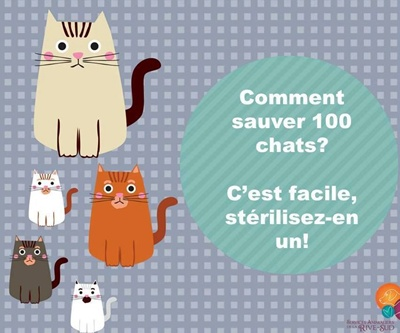

Si vous souhaitez réserver ou commander une de ces décorations de Noël, n'hésitez pas à nous ocntacter au 06 86 03 33 55 !
24.11.2024
En août 2017, un engin de grande envergure avait détruit l'auvent devant le refuge sans laisser sa "carte de visite". Après de nombreuses années de procédures, la réfection de cet auvent a enfin pu avoir lieu.
nitialement, la facture s'élevait à 45 000 € , mais grâce à des travaux moins importants que prévu et aux gestes des entreprises "Colmar Charpente " et " Bilz" , ce coût a pu être réduit de 15 000 €.
Grâce à nos généreux donateurs, 20 000 € ont pu être collectés. Si vous souhaitez nous aider à financer les 10 000 € restants, n'hésitez pas à nous faire votre don par voie postale ou par Helloasso : https://www.helloasso.com/associations/animaux-en-detresse/formulaires/8 ( votre don vous donnera droit à un crédit d'impôt de 66% de ce montant )
Un GRAND MERCI à TOUS !
23.02.2024
Notre association a subi en août 2017 , un préjudice qui a détruit l'auvent devant le refuge. Nous avions alors lancé un appel aux dons et récolté une somme que nous avons bloquée sur un compte en attendant de pouvoir réaliser les réparations.
Après de longues années de procédures judiciaires et administratives, les travaux de réparation ont commencé courant du mois de janvier.
La facture est lourde, il nous manque encore 30 000. €. Nous faisons appel à votre générosité pour nous aider. Vos dons ouvrent droit à un crédit d'impôt de 66% du montant versé, et vous recevrez votre reçu fiscal début 2024. Tout montant sera bienvenu.
Notre cagnotte en ligne : https://www.helloasso.com/associations/animaux-en-detresse/formulaires/8
Vous pouvez également envoyer votre don par chèque à l'ordre de Association « ANIMAUX en DETRESSE » lieu dit le TICHELE , 68920 WETTOLSHEIM Les ERLEN / ou vous rendre au refuge pour faire un don en espèces.
04.02.2024
05.03.2017
